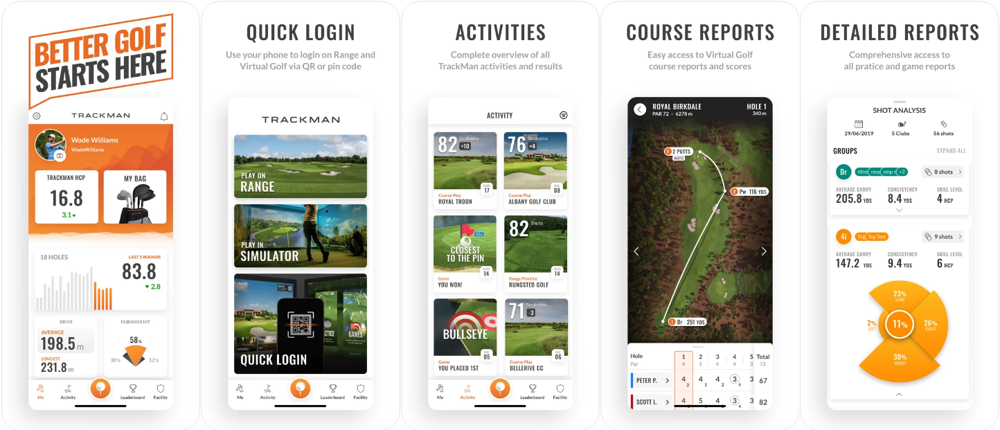

Trackman Golf
- Allows easy access for bay log-in with QR or pin code on the application
- Track and review any activities that a golfer took part in in your facility or any other that also uses TrackMan technology
- Keeps a simulator handicap for each golfer and other key statistics from rounds of virtual golf


